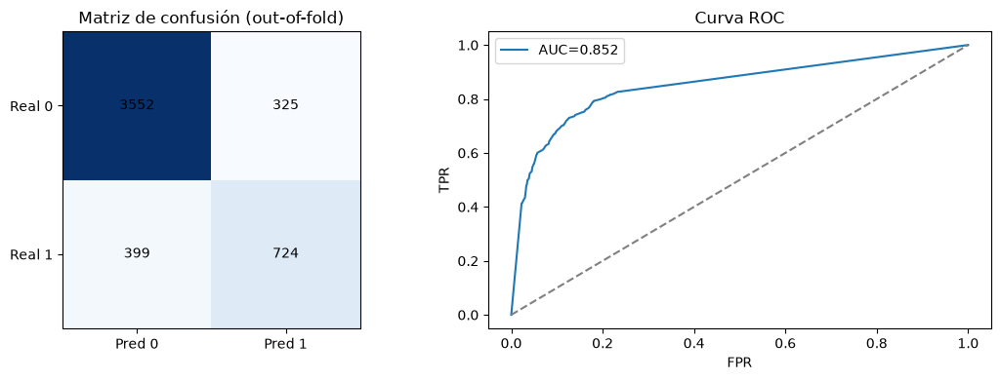
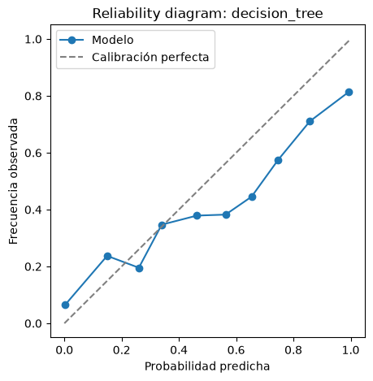

05. Análisis de resultados#
Trabaja directamente desde results/experiments_master.csv, pensado para correrse en una sesión nueva, después de que 04_run_experiments.ipynb ya guardó y cerró (o incluso en otra máquina). Nada de esto depende de tener los objetos NestedCVResult en memoria: las columnas "{metrica}_per_fold" y "best_params_per_fold" que nested_cv.py persiste alcanzan para reconstruir todo lo necesario.
Contenido: tabla de métricas, comparación estadística jerárquica (Friedman → Nemenyi → CD diagram → DeLong → Cliff’s Delta), matriz de confusión/curva ROC del mejor modelo, calibración (+ recalibración si corresponde), y complejidad computacional (estándar vs. optimizado).
Show code cell source
import sys
from pathlib import Path
PROJECT_ROOT = Path.cwd().parent
if str(PROJECT_ROOT) not in sys.path:
sys.path.insert(0, str(PROJECT_ROOT))
import json
import numpy as np
import matplotlib.pyplot as plt
from sklearn.metrics import confusion_matrix, roc_curve, roc_auc_score
from src import config
from src.data_loader import load_processed_dataset, split_features_target
from src.synthetic_data import generate_synthetic_dataset
from src.preprocessing import remove_duplicate_rows
from src.models import MODEL_REGISTRY
from src.experiment_runner import load_master_table
from src.evaluation import (
format_metrics_table,
regenerate_outof_fold_predictions,
evaluate_calibration,
is_calibration_poor,
assess_and_recalibrate,
)
from src.complexity_analysis import compare_standard_vs_optimized, TRAIN_INFERENCE_COMPLEXITY
from src import stats_comparison as sc
np.random.seed(config.RANDOM_STATE)
config.FIGURES_DIR.mkdir(parents=True, exist_ok=True)
Cargar datos y tabla maestra#
Importante: debe ser el MISMO dataset (mismas filas, mismo orden) usado en 04_run_experiments.ipynb; se necesita para reconstruir los folds exactos (complexity_analysis.recover_outer_fold) al regenerar predicciones para DeLong/matriz de confusión/calibración/complejidad.
Show code cell source
try:
df = load_processed_dataset()
except FileNotFoundError:
df = generate_synthetic_dataset()
df, _ = remove_duplicate_rows(df)
X, y = split_features_target(df)
table = load_master_table(config.EXPERIMENTS_MASTER_PATH)
if table.empty:
raise RuntimeError("La tabla maestra está vacía. Correr primero 04_run_experiments.ipynb.")
print(f"{len(table)} combinaciones en la tabla maestra.")
5 combinaciones en la tabla maestra.
Tabla de métricas (media ± desviación estándar, outer loop)#
Show code cell source
metric_for_ranking = config.DEFAULT_SCORING
table_sorted = table.sort_values(f"{metric_for_ranking}_mean", ascending=False)
format_metrics_table(table_sorted)
| model | technique | method | accuracy | precision | recall | f1 | roc_auc | |
|---|---|---|---|---|---|---|---|---|
| 3 | decision_tree | none | random_search | 0.8552 ± 0.0121 | 0.6894 ± 0.0213 | 0.6447 ± 0.0444 | 0.6661 ± 0.0335 | 0.8513 ± 0.0117 |
| 4 | decision_tree | class_weight | random_search | 0.8194 ± 0.0063 | 0.5706 ± 0.0098 | 0.7916 ± 0.0184 | 0.6632 ± 0.0126 | 0.8647 ± 0.0131 |
| 1 | logistic_regression | none | random_search | 0.8628 ± 0.0098 | 0.7685 ± 0.027 | 0.5565 ± 0.03 | 0.6454 ± 0.0285 | 0.8609 ± 0.0067 |
| 2 | logistic_regression | class_weight | random_search | 0.7886 ± 0.0099 | 0.52 ± 0.0154 | 0.789 ± 0.0081 | 0.6266 ± 0.0086 | 0.8623 ± 0.0029 |
| 0 | naive_bayes | none | random_search | 0.7982 ± 0.0056 | 0.5433 ± 0.0138 | 0.65 ± 0.0287 | 0.5912 ± 0.0045 | 0.8113 ± 0.0058 |
Cobertura de la grilla: 112 combinaciones teóricas#
7 modelos × 4 técnicas de balanceo × 4 métodos de optimización = 112 combinaciones teóricas. De esas, 8 no son aplicables porque KNN y Naive Bayes no aceptan class_weight en scikit-learn (KNeighborsClassifier y GaussianNB no tienen ese parámetro; ver src/models.py y src/balancing.py). Quedan 104 combinaciones corridas realmente. La tabla siguiente muestra las 112 filas para que la cobertura quede documentada explícitamente, en vez de simplemente omitir las 8 no aplicables.
Show code cell source
import pandas as pd
from src.balancing import BALANCING_TECHNIQUES, is_compatible
from src.optimization import OPTIMIZATION_METHODS
filas_teoricas = [
(model_name, technique, method, is_compatible(spec, technique))
for model_name, spec in MODEL_REGISTRY.items()
for technique in BALANCING_TECHNIQUES
for method in OPTIMIZATION_METHODS
]
reporte_112 = pd.DataFrame(filas_teoricas, columns=["model", "technique", "method", "compatible"])
reporte_112 = reporte_112.merge(
table[["model", "technique", "method", f"{metric_for_ranking}_mean"]],
on=["model", "technique", "method"], how="left",
)
reporte_112["estado"] = np.where(
~reporte_112["compatible"],
"No aplica (sklearn no admite class_weight para este modelo)",
np.where(reporte_112[f"{metric_for_ranking}_mean"].notna(), "Corrida", "Pendiente"),
)
print(f"Total de combinaciones teóricas: {len(reporte_112)}")
print(reporte_112["estado"].value_counts().to_string())
reporte_112.drop(columns="compatible").sort_values(["estado", "model", "technique", "method"])
Comparación estadística jerárquica#
Friedman (ómnibus) → solo si es significativo: Nemenyi + CD diagram + DeLong (top 2-3, con corrección Holm) + Cliff’s Delta. Ver stats_comparison.py para la justificación completa de por qué es jerárquico y la limitación honesta de potencia estadística con pocos folds externos.
Show code cell source
comparison = sc.run_hierarchical_comparison_from_table(
table, X, y, metric=metric_for_ranking, top_k_for_delong=3
)
friedman = comparison["friedman"]
print(
f"Friedman: estadístico={friedman['statistic']:.4f}, p={friedman['p_value']:.4f}, "
f"significativo={friedman['significant']} (alpha={friedman['alpha']}, "
f"{friedman['n_blocks']} folds, {friedman['k_combinations']} combinaciones)"
)
friedman["avg_ranks"]
Friedman: estadístico=8.8000, p=0.0663, significativo=False (alpha=0.05, 3 folds, 5 combinaciones)
decision_tree|none|random_search 1.666667
decision_tree|class_weight|random_search 2.000000
logistic_regression|none|random_search 2.666667
logistic_regression|class_weight|random_search 3.666667
naive_bayes|none|random_search 5.000000
dtype: float64
Show code cell source
if comparison["friedman"]["significant"]:
sc.plot_cd_diagram(
comparison["friedman"]["avg_ranks"],
comparison["nemenyi_p_matrix"],
cd=comparison["critical_difference"],
save_path=str(config.FIGURES_DIR / "cd_diagram.png"),
)
print(f"Diferencia Crítica (CD): {comparison['critical_difference']:.4f}")
print(f"Top-{len(comparison['top_combos'])} para DeLong: {comparison['top_combos']}")
print("\nDeLong (pares dentro del top, corrección Holm):")
display(comparison["delong_comparisons"])
print("\nCliff's Delta (tamaño del efecto, ver limitación de N_OUTER_FOLDS pequeño en el docstring):")
display(comparison["cliffs_delta"])
else:
print(comparison["stage_2_note"])
Friedman no significativo (p=0.0663 >= alpha=0.05): no se reporta evidencia de superioridad de ninguna combinación. Dado que N_OUTER_FOLDS=3 (pocos bloques), esto puede reflejar falta de potencia estadística tanto como equivalencia real — ver limitación documentada en el docstring del módulo.
Mejor combinación: matriz de confusión y curva ROC#
Predicciones out-of-fold regeneradas desde best_params_per_fold (ya conocidos, un fit por fold, no una búsqueda de hiperparámetros nueva) vía evaluation.regenerate_outof_fold_predictions.
Show code cell source
best_row = table.sort_values(f"{metric_for_ranking}_mean", ascending=False).iloc[0]
best_model = best_row["model"]
best_technique = best_row["technique"]
best_method = best_row["method"]
best_params_per_fold = json.loads(best_row["best_params_per_fold"])
print(f"Mejor combinación según {metric_for_ranking}: {best_model} | {best_technique} | {best_method}")
y_true_best, y_pred_best, y_proba_best = regenerate_outof_fold_predictions(
MODEL_REGISTRY[best_model],
best_technique,
best_params_per_fold,
X,
y,
n_outer_folds=int(best_row["n_outer_folds"]),
random_state=int(best_row["random_state"]),
)
cm = confusion_matrix(y_true_best, y_pred_best, labels=[0, 1])
fpr, tpr, _ = roc_curve(y_true_best, y_proba_best)
auc = roc_auc_score(y_true_best, y_proba_best)
fig, axes = plt.subplots(1, 2, figsize=(11, 4))
axes[0].imshow(cm, cmap="Blues")
for (i, j), v in np.ndenumerate(cm):
axes[0].text(j, i, str(v), ha="center", va="center")
axes[0].set_xticks([0, 1]); axes[0].set_yticks([0, 1])
axes[0].set_xticklabels(["Pred 0", "Pred 1"]); axes[0].set_yticklabels(["Real 0", "Real 1"])
axes[0].set_title("Matriz de confusión (out-of-fold)")
axes[1].plot(fpr, tpr, label=f"AUC={auc:.3f}")
axes[1].plot([0, 1], [0, 1], linestyle="--", color="gray")
axes[1].set_xlabel("FPR"); axes[1].set_ylabel("TPR"); axes[1].set_title("Curva ROC")
axes[1].legend()
plt.tight_layout()
plt.savefig(config.FIGURES_DIR / f"confusion_roc_{best_model}.png", dpi=150, bbox_inches="tight")
plt.show()
Mejor combinación según f1: decision_tree | none | random_search

Calibración: Brier, ECE, reliability diagram (+ recalibración si corresponde)#
Show code cell source
calib = evaluate_calibration(y_true_best, y_proba_best, n_bins=10)
print(
f"Brier: {calib['brier_score']:.4f} ECE: {calib['ece']:.4f} "
f"(calibración deficiente: {is_calibration_poor(calib['ece'])})"
)
fig, ax = plt.subplots(figsize=(5, 5))
ax.plot(calib["reliability_curve"]["prob_pred"], calib["reliability_curve"]["prob_true"], marker="o", label="Modelo")
ax.plot([0, 1], [0, 1], linestyle="--", color="gray", label="Calibración perfecta")
ax.set_xlabel("Probabilidad predicha"); ax.set_ylabel("Frecuencia observada")
ax.set_title(f"Reliability diagram: {best_model}"); ax.legend()
plt.savefig(config.FIGURES_DIR / f"reliability_{best_model}.png", dpi=150, bbox_inches="tight")
plt.show()
per_fold_metric = json.loads(best_row[f"{metric_for_ranking}_per_fold"])
best_fold_idx = int(np.argmax(per_fold_metric))
if is_calibration_poor(calib["ece"]):
recal = assess_and_recalibrate(
MODEL_REGISTRY[best_model],
best_technique,
best_params_per_fold[best_fold_idx],
X,
y,
best_fold_idx,
method="isotonic",
n_outer_folds=int(best_row["n_outer_folds"]),
)
print(
f"Recalibración (isotonic, fold {best_fold_idx}): "
f"ECE {recal['before']['ece']:.4f} -> {recal['after']['ece']:.4f} "
f"(mejora Brier: {recal['brier_improvement']:.4f})"
)
else:
print("Calibración adecuada, no se aplica recalibración.")
Brier: 0.1147 ECE: 0.0878 (calibración deficiente: True)

Recalibración (isotonic, fold 2): ECE 0.0998 -> 0.0223 (mejora Brier: 0.0100)
Complejidad computacional: estándar vs. optimizado#
Show code cell source
complexity_row = compare_standard_vs_optimized(
MODEL_REGISTRY[best_model],
best_technique,
best_params_per_fold[best_fold_idx],
X,
y,
best_fold_idx,
n_outer_folds=int(best_row["n_outer_folds"]),
scoring=metric_for_ranking,
)
print(f"Complejidad teórica ({best_model}):")
print(f" Train: {TRAIN_INFERENCE_COMPLEXITY[best_model]['train']}")
print(f" Inferencia: {TRAIN_INFERENCE_COMPLEXITY[best_model]['inference']}")
import pandas as pd
pd.DataFrame([complexity_row])[
[
"standard_fit_time_seconds",
"optimized_fit_time_seconds",
"standard_fit_peak_memory_mb",
"optimized_fit_peak_memory_mb",
f"standard_{metric_for_ranking}",
f"optimized_{metric_for_ranking}",
"performance_change",
]
]
Complejidad teórica (decision_tree):
Train: O(n·p·log n) en promedio (ordenar features para evaluar cada split).
Inferencia: O(log n) por consulta en promedio (profundidad del árbol).
| standard_fit_time_seconds | optimized_fit_time_seconds | standard_fit_peak_memory_mb | optimized_fit_peak_memory_mb | standard_f1 | optimized_f1 | performance_change | |
|---|---|---|---|---|---|---|---|
| 0 | 0.057769 | 0.064309 | 1.428141 | 1.417515 | 0.668421 | 0.71159 | 0.043169 |
Continuar en 06_interpretability.ipynb para SHAP/LIME del mejor modelo.